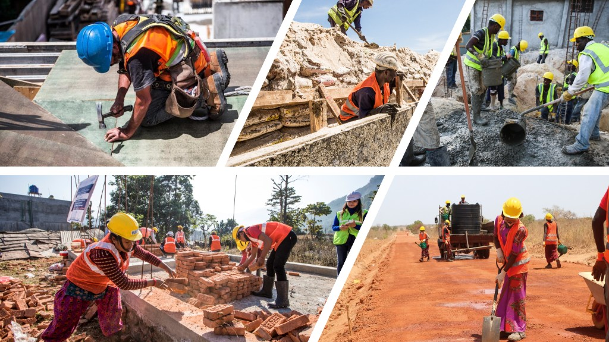
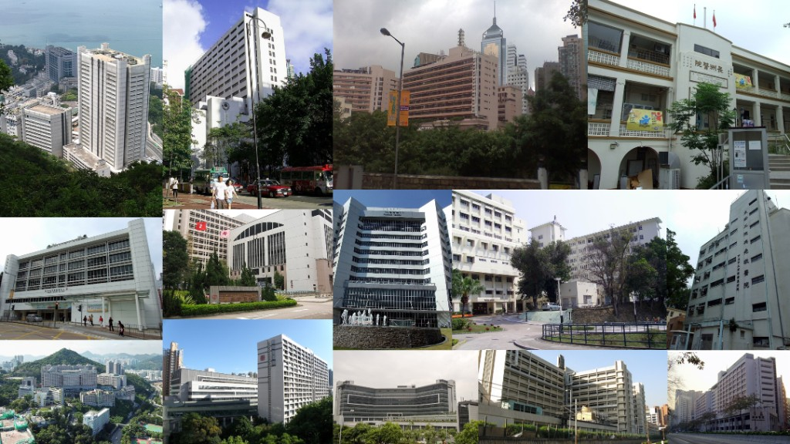
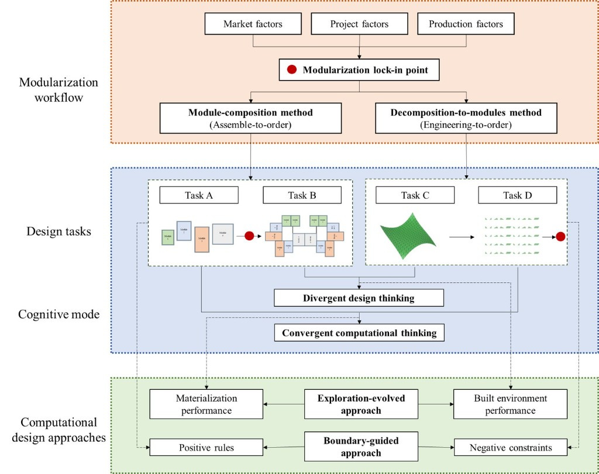
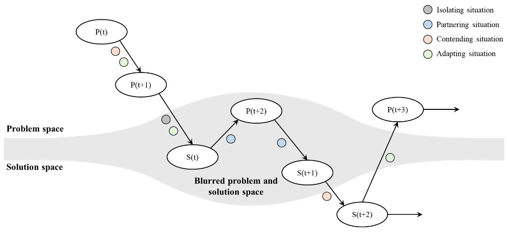
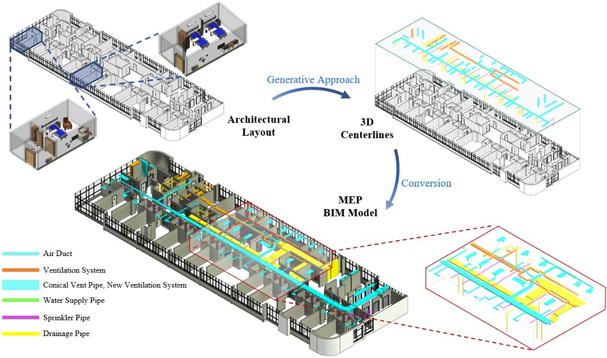

From Site Work to Assembly Logic
DfMA reframes construction as a production-ready design problem—modules, interfaces, factory capability, logistics, and assembly are settled before work reaches the site. The contrast below moves from variable site labour to controlled factory production and on-site assembly.

Hong Kong Hospitals as Application Context
Hospital construction in Hong Kong makes DfMA challenges concrete: large delivery pipelines, ageing demand, limited capacity, and complex medical infrastructure.
Hospitals need speed, quality, infection-control reliability, adaptable space, and dense MEP coordination. These are exactly the conditions where manufacture-ready design and assembly planning matter most.

Research Agenda
Three research streams: urban modular construction, human-AI collaboration, and generative design optimization—linking manufacture-ready design representation, human–AI interaction, and hospital MEP generative workflows.
Urban Modular Construction
Represent buildings as assemblies of parts, interfaces, constraints, and production decisions so design options align with manufacture, transport, and assembly from the outset.
We structure geometric and systems information to support module partitioning, interface definition, and buildability reasoning through design iteration.
Funding HKU Seed Fund


Human-AI Collaboration
We study human–AI coopetition in design—how people and AI systems partner, contend, and adapt as problem and solution spaces blur.
The research tracks how such interaction reshapes design workflows and opens new forms of knowledge co-creation.
Funding NSFC YSF(C)



Generative Design Optimization
Hospital building layouts provide the application scenario—dense wards, clinical adjacencies, and tight vertical cores make coordinated MEP routing especially demanding.
A generative workflow moves from architectural layout to optimized 3D centerlines for air, ventilation, water, sprinkler, and drainage systems, then converts those routes into coordinated MEP BIM models ready for design review.
Funding Application under review


